1. Introduction
Bird migration is a critical phenomenon that contributes to biodiversity, ecosystem stability, and climate change analysis. Understanding and monitoring avian migratory patterns require robust, scalable, and interoperable data-driven solutions. The Migration Reporting Tool is a comprehensive web-based application designed to collect, process, analyze, and disseminate data about bird migration through an integrated technology stack. This system leverages modern web technologies such as Node.js, Express.js, MongoDB, and React, while ensuring semantic interoperability through the adoption of RDF and SPARQL.
The application follows a multi-stage workflow that integrates diverse data sources and processing mechanisms. Initially, the system ingests image-based reports from the Flickr API and verifies their relevance through Google Vision API, ensuring that only valid bird-related data are processed. Next, Big Data Cloud API is employed to extract geospatial metadata, such as country and continent, from latitude and longitude coordinates. The collected reports, enriched with species classification and metadata, are persistently stored in a MongoDB database.
To facilitate knowledge representation and interoperability, the stored data is converted into an RDF-based format using a custom-built converter. The generated RDF triples conform to ontological standards and are published on GraphDB Ontotext Cloud, making them queryable via SPARQL endpoints. This enables both predefined and user-defined statistical analyses to be conducted efficiently.
The frontend is powered by React and provides an intuitive user experience. The primary user interface features an interactive map where users can filter reports based on species and seasons (winter, autumn, summer, spring). Clicking on a report reveals detailed information, including title, description, date, species, location, and an image of the bird.
Security and user management are integral aspects of the system. User authentication includes traditional registration, Google OAuth-based authentication, email verification, and password recovery via email. Additionally, report submissions undergo validation and require a title, description, date, image (uploaded via Cloudinary API), and species selection. Location data is automatically retrieved to ensure accurate geospatial mapping.
Statistical analysis is a core functionality of the application, accessible via the Statistics page. Predefined analytics include top five most reported species, top ten cities by reports, continent-wise report distribution, and seasonal reporting trends. Users also have the ability to create custom statistics by executing SPARQL queries directly on the GraphDB knowledge base.
2. Internal Data Structures
The Migration Reporting Tool employs a well-structured database schema in MongoDB to facilitate efficient data storage, retrieval, and querying. The database consists of several key collections: Users, Species, Reports, and RefreshTokens, each serving a crucial role in the functionality of the application.
2.1 User Model
The users collection stores all registered users and their authentication details, providing the foundation for account management and security. Each user document includes the following fields:
- _id (ObjectId): A unique identifier automatically generated for each user.
- username (String, required): A unique identifier for each user, required for authentication.
- email (String, required, unique): Used for authentication and account recovery.
- passwordHash (String, required): Securely stored password hash, encrypted using bcrypt.
- googleId (String, optional): If the user registers via Google OAuth, this field stores the Google ID.
- profilePhoto (String, optional): Stores the URL of the user's profile picture.
- verified (Boolean, default: false): Indicates whether the user has verified their email.
- createdAt (Date, default: current timestamp): The timestamp of when the account was created.
- updatedAt (Date, default: current timestamp): The timestamp of the last update to the user document.
Authentication is handled using bcrypt for password hashing and JWT-based session management, ensuring secure authentication and authorization.
2.2 Species Model
The species collection acts as a reference for all bird species available for reporting in the application. This ensures consistency and allows users to report sightings using a standardized species list.
- _id (ObjectId): A unique identifier automatically generated for each species.
- name (String, required, unique): The scientific or common name of the bird species.
- createdAt (Date, default: current timestamp): The timestamp of when the species was created.
- updatedAt (Date, default: current timestamp): The timestamp of the last update to the species document.
2.3 Report Model
The reports collection is at the core of the application, storing user-submitted bird sightings. Each report includes:
- _id (ObjectId): A unique identifier automatically generated for each report.
- userId (ObjectId, optional): References the user who submitted the report.
- title (String, required): The title of the report.
- description (String, required): Detailed description of the sighting.
- date (Date, required): The date the sighting occurred.
- speciesId (ObjectId, required): References the species identified in the report.
- imageUrl (String, required): URL of the uploaded image (stored via Cloudinary).
- latitude (Number, required): The latitude where the sighting took place.
- longitude (Number, required): The longitude where the sighting took place.
- continent (String, required): The continent derived from geolocation using the Big Data Cloud API.
- country (String, required): The country derived from geolocation using the Big Data Cloud API.
- createdAt (Date, default: current timestamp): The timestamp of when the report was created.
- updatedAt (Date, default: current timestamp): The timestamp of the last update to the report document.
To ensure data integrity, images undergo validation through the Google Vision API before being stored, verifying that they indeed contain birds. Additionally, geolocation data is processed through the Big Data Cloud API to enrich the reports with continent and country information.
2.4 Refresh Token Model
The refreshTokens collection is crucial for maintaining secure user sessions, enabling token-based authentication while minimizing security risks. Each token document consists of:
- _id (ObjectId): A unique identifier automatically generated for each token.
- userId (ObjectId, required): References the user to whom the token belongs.
- tokenHash (String, required): Securely stored hash of the refresh token.
- expires (Date, required): Expiration date of the token.
- createdAt (Date, default: current timestamp): The timestamp of when the token was issued.
This model is essential for handling user sessions securely and preventing unauthorized access.
3. API Implementation
This API follows a RESTful architecture and provides access to bird migration reports. Below are descriptions of the main routes:
GET /api/species
Retrieves a list of all bird species stored in the database.
Response
{
"isSuccess": true,
"apiResponseCode": 1,
"data": [
{
"_id": "6795352ee4ff5eea0eb695fb",
"name": "cuckoos"
},
{
"_id": "67953560e4ff5eea0eb69600",
"name": "sparrows"
},
{
"_id": "679535b7e4ff5eea0eb69609",
"name": "buntings"
},
]
}
Example Implementation (Node.js with Express)
const getSpecies = async () => {
try {
const species = await Species.find({}).exec();
return {
type: ResponseTypes.Success,
status: StatusCodes.Ok,
data: species,
};
} catch (error) {
console.error('Error retrieving species:', error);
return {
type: ResponseTypes.Error,
status: StatusCodes.InternalServerError,
error: ErrorMessages.UnexpectedErrorGet,
};
}
};
GET /api/species/:id
Retrieves a specific species by its unique ID.
Response
{
"isSuccess": true,
"apiResponseCode": 1,
"data": {
"_id": "679534d4e4ff5eea0eb695f8",
"name": "ducks"
}
}
GET /api/reports
Based on season and species, retrieves a list of bird migration reports.
Parameters
- season (string, required) - The season for the report (e.g., Spring, Summer, Autumn, Winter).
- speciesId (string, required) - The unique ID of the bird species.
Response
{
"isSuccess": true,
"apiResponseCode": 1,
"data": [
{
"_id": "6797f1d4b1daea6395afca96",
"title": "Brown Cuckoo-Dove (Macropygia phasianella)",
"description": "Reasonably common through rainforests of eastern Australia.\nBulli, NSW, Australia",
"date": "2024-02-18T04:26:37.000Z",
"speciesId": "6795352ee4ff5eea0eb695fb",
"imageUrl": "https://live.staticflickr.com/65535/53614398470_51e764cb12_b.jpg",
"latitude": -34.330182,
"longitude": 150.901615,
"continent": "Australian continent",
"country": "Australia",
"__v": 0,
"createdAt": "2025-01-27T20:51:33.901Z",
"updatedAt": "2025-01-27T20:51:33.901Z"
},
{
"_id": "6797f1d4b1daea6395afca98",
"title": "river bend - black-faced cuckoo-shrike",
"description": "Many thanks for your visits, faves and comments.",
"date": "2025-01-09T05:37:16.000Z",
"speciesId": "6795352ee4ff5eea0eb695fb",
"imageUrl": "https://live.staticflickr.com/65535/54280327839_55318f959b_b.jpg",
"latitude": -35.148012,
"longitude": 148.945413,
"continent": "Australian continent",
"country": "Australia",
"__v": 0,
"createdAt": "2025-01-27T20:51:33.901Z",
"updatedAt": "2025-01-27T20:51:33.901Z"
},
]}
Example Implementation (Node.js with Express)
try{
const seasonToMonths = {
"spring": [3, 4, 5],
"summer": [6, 7, 8],
"autumn": [9, 10, 11],
"winter": [12, 1, 2],
};
const months = seasonToMonths[season];
const filter = {
$expr: {
$in: [{ $month: "$date" }, months],
},
};
if(speciesId != "All species" && speciesId != null) {
filter.speciesId = speciesId;
}
const reports = await Report.find(filter);
}
POST /api/reports
Creates a new bird migration report based on user input.
Request body
{
"title": "Spring Migration",
"description": "Observed a flock of swallows.",
"date": "2024-04-15T09:30:00Z",
"speciesId": "6795358ae4ff5eea0eb69604",
"imageUrl": "https://example.com/image.jpg",
"latitude": 34.0522,
"longitude": -118.2437,
"continent": "North America",
"country": "USA"
}
Example Implementation (Node.js with Express)
const locationData = await getLocationData(reportData.latitude, reportData.longitude);
const report = new Report({
title: reportData.title,
description: reportData.description,
date: reportData.date,
speciesId: reportData.speciesId,
imageUrl: reportData.imageUrl,
latitude: reportData.latitude,
longitude: reportData.longitude,
country: locationData.country,
continent: locationData.continent,
});
await report.save();
POST /api/data
Fetches data from Flickr, filters it using Google Vision API and Big Data Cloud, then stores it in the database. This route is protected by an internal API key.
Headers
- x-internal-secret (string, required) - Internal key for authentication.
GET /api/sparql/most-reported-countries
/api/sparql/ routes are used to execute SPARQL queries on the GraphDB knowledge base. For example, /most-reported-countries fetches the top 10 countries with the most bird reports.
Response
{
"type": "success",
"data": [
{
"country": "United States of America (the)",
"count": 454
},
{
"country": "United Kingdom of Great Britain and Northern Ireland (the)",
"count": 200
},
...
]}
Example Implementation (Node.js with Express)
const getMostReportedCountries = async () => {
const query = `
PREFIX ex: <http://example.org/>
SELECT ?country (COUNT(?report) AS ?count)
WHERE {
?report a ex:Report ;
ex:country ?country .
}
GROUP BY ?country
ORDER BY DESC(?count)
LIMIT 10
`;
try {
const result = await executeSPARQLQuery(query);
const countries = result.map((binding) => ({
country: binding.country.value,
count: parseInt(binding.count.value, 10),
}));
...
}}
In terms of authentication, this system provides a structured way for users to access, register, and manage their accounts securely:
- Logging in and registering: Users can log in using their credentials or register a new account. Additionally, they have the option to authenticate through Google, making the process faster.
- Google authentication: Users who prefer not to create an account manually can sign in with their Google account. If they authenticate successfully, they will be redirected back to the application.
- Logging out: When users decide to end their session, they can log out, ensuring their access tokens are invalidated for security purposes.
- Token management: If a user’s session expires, they can request a new access token using a refresh token, avoiding the need to log in again.
- Email verification: After registration, users can receive a verification email to confirm ownership of their email address.
- Password management: If a user forgets his password, he can request a reset link via email and set a new password securely.
In addition to these routes, there are multiple routes for queries in SPARQL as well as a route for custom queries, routes for authentication and other PUT, DELETE routes protected by an internal secret. All routes can be found in the API specification, here
Diagrams
The two diagrams (Sequence and Flowchart) outline the Migration Reporting Tool’s workflow, detailing interactions between the user, frontend, backend, APIs, and databases. It maps the journey of data from user actions to processing and storage. The process begins with user authentication via email/password or Google OAuth. For email registration, a verification email is sent via EmailService. Once authenticated, users can access the platform’s features. A key function is fetching bird data. When a user requests bird details, the backend retrieves images from Flickr API, verifies them with Google Vision API, and extracts geographical data via BigDataCloud API. The processed data, including reports and species details, is stored in MongoDB. The system also converts stored data into Turtle format for GraphDB. A Converter transforms MongoDB records into RDF and sends them to GraphDB, enabling structured queries via SPARQL. Users explore data through an interactive map, selecting a season and bird species to view relevant reports. The frontend queries MongoDB, retrieves reports, and displays them on the map with images and descriptions. For statistical insights, users can access predefined statistics (e.g., top reported species, city-based reports, seasonal distributions) or run custom SPARQL queries on GraphDB. The backend processes these queries and returns results to the frontend. Users can also contribute reports by submitting details and uploading images via Cloudinary API. The backend stores the report in MongoDB and confirms the submission. Overall, the diagram highlights the system’s structured approach to data collection, validation, storage, and retrieval, integrating multiple APIs and databases for seamless bird migration tracking.
Sequence:
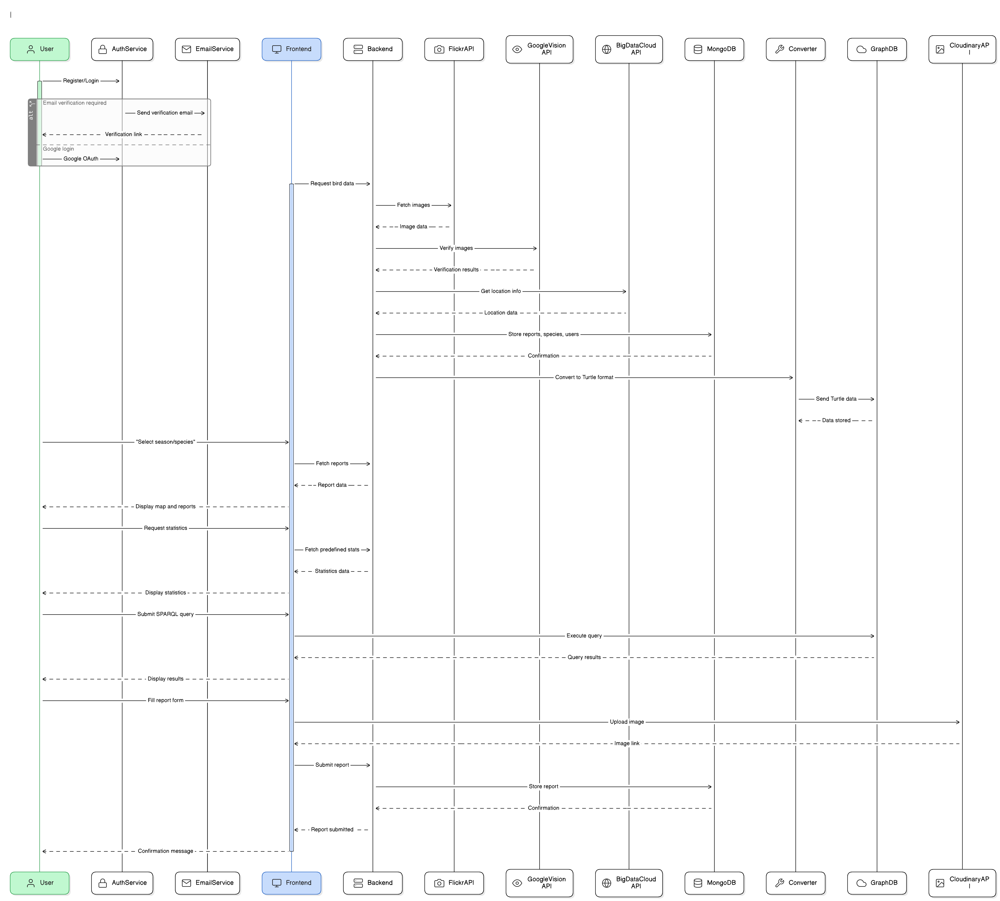Flowchart:
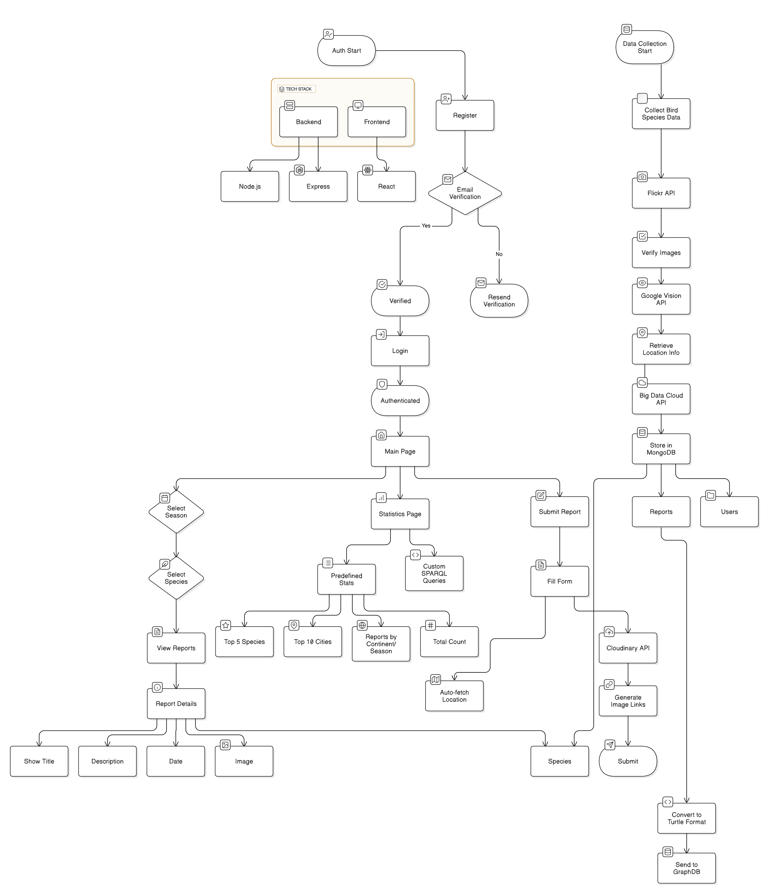Other diagrams, such as C4 diagrams, can be seen here.
4. RDF-based Knowledge Model
In the Migration Reporting Tool, the RDF-based knowledge model is used to structure and semantically enrich bird sighting reports. This model allows for a standardized representation of data, making it easier to integrate with other datasets and efficiently query the information using SPARQL. By structuring the data as subject–predicate–object triples, it can be linked to other datasets, either internally or externally. For example, species information can be connected to existing biodiversity ontologies, while geographical data can be linked to open datasets providing additional details about regions or ecosystems.
The RDF model of the application is built around the concept of a Report, which represents an individual bird sighting. Each report includes multiple descriptive properties, such as: title, description, date of observation, species, image, geographical coordinates, geographical information.
Regarding ontology reuse, the application incorporates standard vocabularies such as schema.org for common properties, including report title (schema:name), description (schema:description), publication date (schema:datePublished), image (schema:image), and location (schema:location). Additionally, for more application-specific elements, such as species association and country identification, custom extensions have been defined using the ex: prefix (e.g., ex:species, ex:country).
To further enhance interoperability and data enrichment, Wikidata has been integrated into the RDF model. Instead of treating species as simple text values, the application retrieves their corresponding Wikidata URIs, linking reports to structured knowledge about each bird species. This linkage enables richer semantic queries, as users can access taxonomic classification, habitat details, and conservation status from Wikidata. Dbpedia is also used to link the continent and country to the reports. This allows for more detailed information about the geographical location of the bird sightings.
By structuring data in this way, the application enables users to efficiently query and analyze bird migration patterns, geographical distribution, and seasonal trends. The fact that all statistics in the Statistics section are generated through SPARQL queries demonstrates the flexibility and power of this semantic model.
@prefix ex: <http://example.org/> .
prefix xsd: <http://www.w3.org/2001/XMLSchema#> .
prefix wd: <https://www.wikidata.org/wiki/> .
prefix dbpedia: <http://dbpedia.org/resource/> .
ex:report6795fe2c11f84dd7768b8a49 a ex:Report ;
ex:title "Dalmatian pelican" ;
ex:date "2025-01-24T13:25:18.000Z"^^xsd:dateTime ;
ex:species ex:species6795354de4ff5eea0eb695fe ;
ex:speciesName "pelicans";
ex:speciesWikidata "https://www.wikidata.org/wiki/Q11846678";
ex:description "Dalmatian pelican in Lake Kerkini" ;
ex:imageUrl "www.example.com" ;
ex:latitude "41.165473"^^xsd:float ;
ex:longitude "23.203811"^^xsd:float ;
ex:continent "dbpedia.org/resource/Europe" ;
ex:country "dbpedia.org/resource/Greece" .
ex:report6795fe2c11f84dd7768b8a2b a ex:Report ;
ex:title "Sleepy ducks" ;
ex:date "2025-01-25T06:31:54.000Z"^^xsd:dateTime ;
ex:species ex:species679534d4e4ff5eea0eb695f8 ;
ex:speciesName "ducks";
ex:speciesWikidata "https://www.wikidata.org/wiki/Q3736439";
ex:description "Australian wood ducks" ;
ex:imageUrl "www.example.com" ;
ex:latitude "-34.409441"^^xsd:float ;
ex:longitude "150.898879"^^xsd:float ;
ex:continent "dbpedia.org/resource/Australia_(continent)" ;
ex:country "dbpedia.org/resource/Australia" .`
5. External Data & SPARQL
The Migration Reporting Tool primarily relies on user-submitted data for bird sightings. However, integrating external knowledge bases such as Wikidata can significantly enhance the richness and semantic accuracy of the data. For example, instead of storing only the bird species name as a plain string (e.g., "pelicans"), the system can link species to Wikidata URIs, which provide additional structured information, such as taxonomy, habitat, and conservation status. Dbpedia is also used to link the continent and country to the reports. This allows for more detailed information about the geographical location of the bird sightings.
SPARQL queries
1. Query: Find the Closest Report with Wikidata Species Link
This query finds the closest report to (41.0, 23.0) while also retrieving the species name and its Wikidata link. This query is helpful for geospatial biodiversity analysis, allowing researchers to find the closest species report with linked Wikidata information.
prefix ex: <http://example.org/>
prefix xsd: <http://www.w3.org/2001/XMLSchema#>
SELECT ?report ?title ?latitude ?longitude ?speciesName ?wikidataLink
WHERE {
?report a ex:Report ;
ex:title ?title ;
ex:latitude ?lat ;
ex:longitude ?long ;
ex:speciesName ?speciesName ;
ex:speciesWikidata ?wikidataLink .
BIND(abs(?lat - 41.0) + abs(?long - 23.0) AS ?distance)
}
ORDER BY ?distance
LIMIT 1
2. Find the Earliest and Latest Observation of Each Species
This query retrieves the earliest and latest observation dates for each bird species in the dataset. By analyzing the temporal distribution of sightings, researchers can identify migration patterns, breeding seasons, and other temporal trends.
prefix ex: <http://example.org/>
prefix xsd: <http://www.w3.org/2001/XMLSchema#>
SELECT ?speciesName (MIN(?date) AS ?earliestReport) (MAX(?date) AS ?latestReport)
WHERE {
?report a ex:Report ;
ex:speciesName ?speciesName ;
ex:date ?date .
}
GROUP BY ?speciesName
3. Retrieve the Two Closest Reports for Each Species
Finds the two closest reports for each species based on real geographical distance using the Haversine formula. Useful for tracking species movement patterns or identifying clusters of sightings.
prefix ex: <http://example.org/>
prefix xsd: <http://www.w3.org/2001/XMLSchema#>
SELECT ?speciesName ?report1 ?report2 ?distance
WHERE {
?report1 a ex:Report ;
ex:speciesName ?speciesName ;
ex:latitude ?lat1 ;
ex:longitude ?long1 .
?report2 a ex:Report ;
ex:speciesName ?speciesName ;
ex:latitude ?lat2 ;
ex:longitude ?long2 .
FILTER(?report1 != ?report2)
BIND(6371 * ACOS(
SIN(?lat1 * PI() / 180) * SIN(?lat2 * PI() / 180) +
COS(?lat1 * PI() / 180) * COS(?lat2 * PI() / 180) *
COS((?long2 - ?long1) * PI() / 180)
) AS ?distance)
}
ORDER BY ?speciesName ?distance
LIMIT 10
4. Find Reports That Mention the Same Species Observed in Two Different Continents
Finds species that have been observed in at least two different continents. This helps identify migratory species or potential introduction of species into new ecosystems.
prefix ex: <http://example.org/>
prefix xsd: <http://www.w3.org/2001/XMLSchema#>
SELECT DISTINCT ?speciesName ?continent1 ?continent2
WHERE {
?report1 a ex:Report ;
ex:speciesName ?speciesName ;
ex:continent ?continent1 .
?report2 a ex:Report ;
ex:speciesName ?speciesName ;
ex:continent ?continent2 .
FILTER(?continent1 != ?continent2)
}
ORDER BY ?speciesName
5. Find Species That Have Been Observed in the Largest Number of Countries
Counts the number of distinct countries where each species has been reported. Useful for studying species migration patterns.
prefix ex: <http://example.org/>
prefix xsd: <http://www.w3.org/2001/XMLSchema#>
SELECT ?speciesName (COUNT(DISTINCT ?country) AS ?countryCount)
WHERE {
?report a ex:Report ;
ex:speciesName ?speciesName ;
ex:country ?country .
}
GROUP BY ?speciesName
ORDER BY DESC(?countryCount)
LIMIT 5
How This Solution Conforms to Linked Data Principles
The Linked Data principles aim to ensure that data is structured, accessible, and interlinked across the web. The Migration Reporting Tool aligns with these principles in several ways:
- Using URIs as Identifiers
- Providing Useful Data in Standard Formats
- Abstraction
- Provide Useful Information When Someone Looks Up a URI
Species are linked to their Wikidata URIs, ensuring that every species name references an established knowledge source. Geographical locations (countries and continents) use DBpedia URIs, allowing external datasets to refer to these locations in a standardized way.
The application exposes bird sighting reports in RDF/Turtle, allowing easy consumption by other systems. Queries are performed using SPARQL, a standard query language for RDF.
Avoiding implementation details: dbpedia.org/resource/Romania versus http://www4.wiwiss.fu-berlin.de:2020/demos/dbpedia/cgi-bin/resources.php?id=Romania
When resolving a species URI from Wikidata, users receive structured information about its taxonomy, habitat, and conservation status. When resolving a geographical URI from DBpedia, users obtain detailed descriptions, including population data, climate information, and historical context. Reports are structured using RDF vocabularies, such as schema.org, making them compatible with semantic web applications.
Benefits of This Approach:
- Enhanced data discoverability: Researchers can follow links to external knowledge bases for deeper insights.
- Interoperability: system aligns with established semantic web standards, allowing easy integration with other datasets.
- Rich semantic querying: Using SPARQL, users can perform complex queries across linked datasets, enabling advanced biodiversity analysis.
- Future-proofing: By adhering to Linked Data principles, the system can evolve and integrate with new datasets without requiring significant changes.
6. User Guide
This section provides step-by-step instructions on how to use the Migration Reporting Tool. Below, you will find detailed explanations for the main pages, including screenshots to help you navigate the application efficiently.
6.1 Map Page
The map page is the main interface where users can visualize bird migration reports based on season and species. Follow these steps to use it:
- Use the dropdown menus to select a season (Winter, Spring, Summer, or Autumn) and a bird species.
- Click the "Show Reports" button to display all reports matching the selected criteria.
- Reports will appear as markers on the map. Click on a marker to view report details.
Displayed report details include: title, description, date, species, and an image of the bird.
Screenshot: 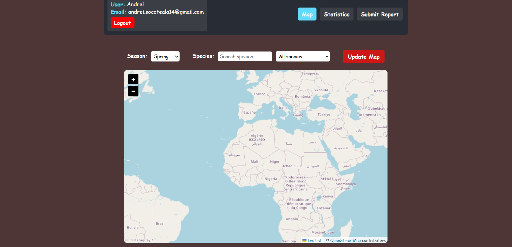
6.2 Statistics Page
The statistics page provides predefined migration insights and allows users to create custom queries using SPARQL.
Predefined Statistics:
- Top 5 most reported bird species.
- Top 10 cities with the most reports.
- Reports distribution by continent.
- Total reports count.
- Reports based on season.
Custom Statistics:
- Use the SPARQL query editor to write custom queries.
- Example query is provided to help users understand the RDF format.
- Click the "Run Query" button to fetch results from the GraphDB database.
Screenshot: 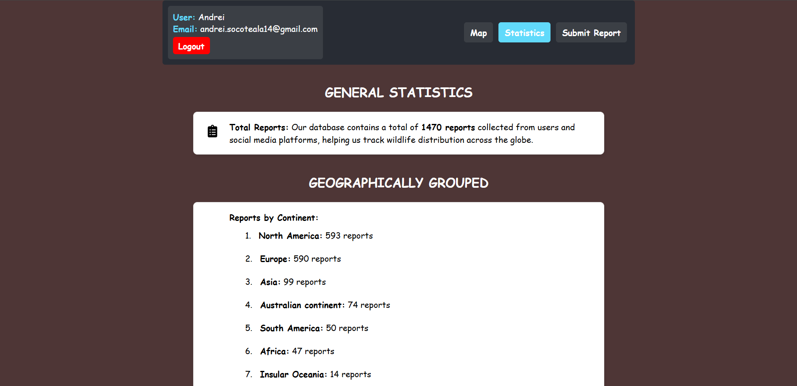
Screenshot: 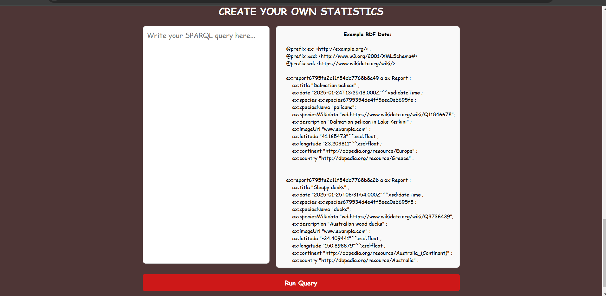
6.3 Submit Report Page
Users can submit new bird migration reports by filling out a form. Follow these steps:
- Enter a title and a brief description of the sighting.
- Select the date of observation.
- Choose the bird species from the dropdown list.
- Upload an image of the bird. The image is processed via Cloudinary to generate a link.
- The location (latitude and longitude) is detected automatically.
- Click the Submit button to save the report.
Screenshot: 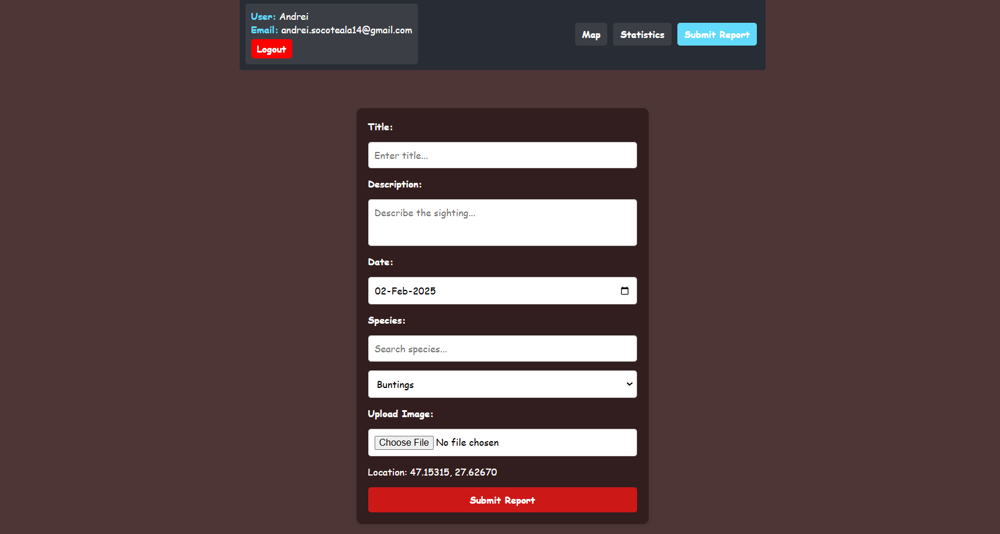
Once submitted, the report is stored in the MongoDB database and appears on the map page.
7. Case Studies
Case Study 1: Seasonal Migration Patterns of Storks
Overview: Data collected using the Migration Reporting Tool revealed clear seasonal migration patterns for storks across different regions.
Findings: Storks are highly present in Europe during spring and summer, taking advantage of the abundant food supply and favorable breeding conditions. As autumn approaches, they begin to disappear from these regions.
Reason: The drop in temperature and reduction in food sources, such as insects and small amphibians, push storks to migrate towards warmer regions.
Impact: In winter, storks start appearing in warmer areas like Central America and Africa, where they can find better feeding and nesting conditions, ensuring their survival through the colder months.
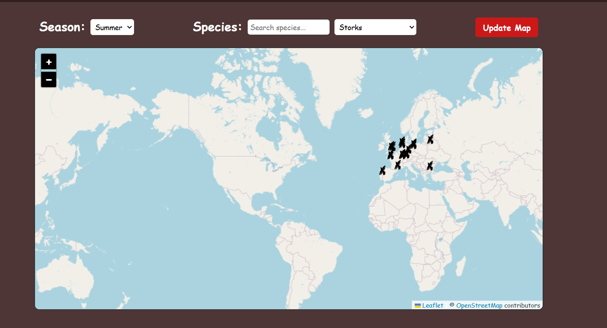 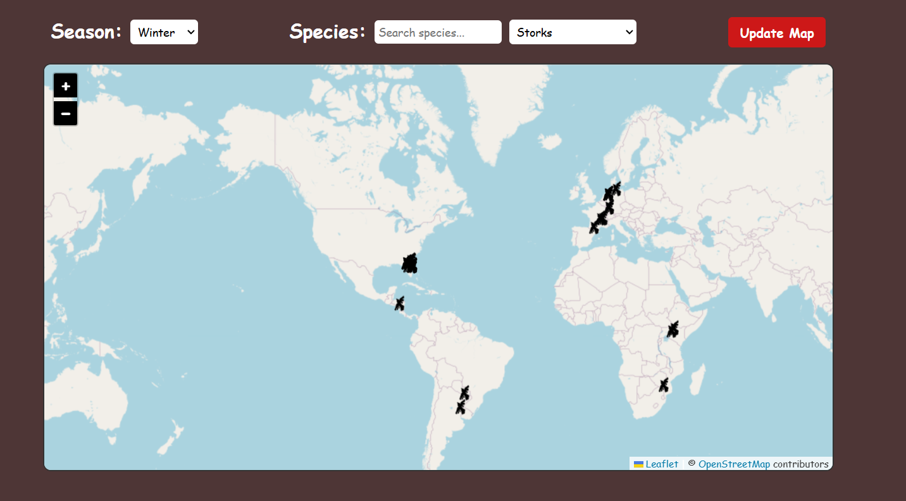Case Study 2: Most Reported Bird Species Per Season
Overview: Using the statistics page, users identified which bird species were most commonly reported during different seasons.
Findings: Some species, like thrushes and storks, dominate spring reports, while winter reports show increased sightings of species like waterbirds and ducks.
Impact: This analysis helps researchers track seasonal population shifts and informs conservation policies for migratory birds.
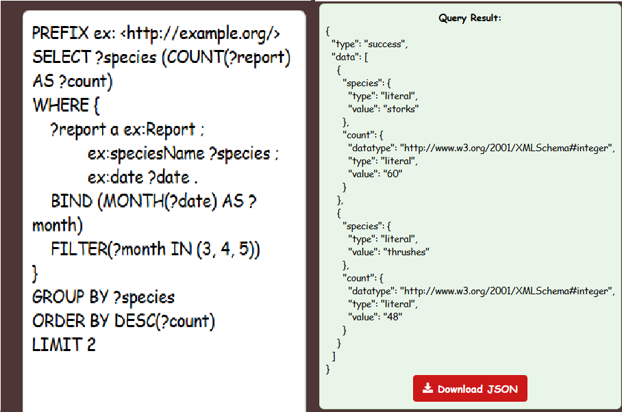 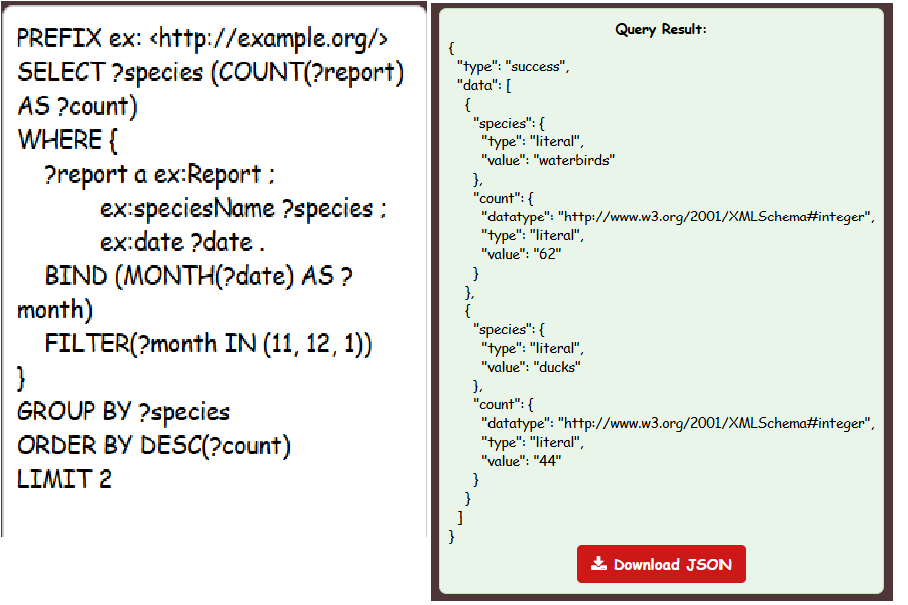Case Study 3: Increased Reports During Migration Peaks
Overview: The application recorded significant spikes in reports during peak migration months.
Findings: Analysis of user submissions showed that the highest number of reports were recorded during spring, aligning with well-documented bird migration periods.
Impact: This pattern confirms that users are actively tracking bird movements, making the tool a valuable resource for real-time migration monitoring.
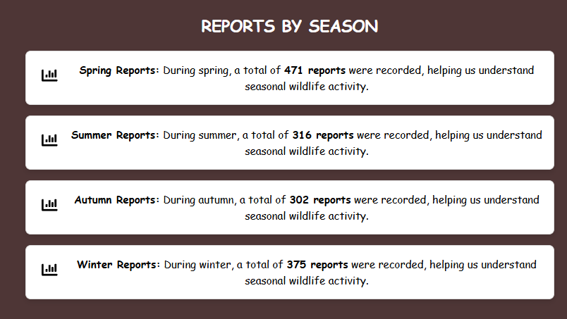8. Video Demonstration
9. Evaluation
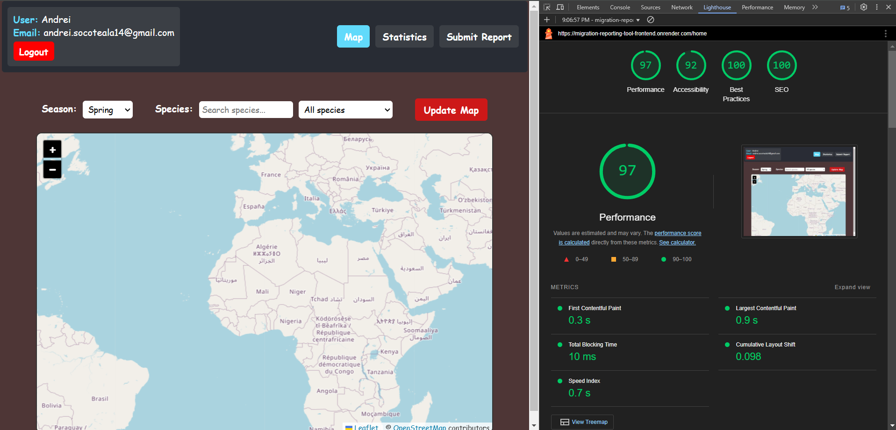10. Comparison with Existing Solutions
The Migration Reporting Tool (MiRT) provides a comprehensive solution for tracking bird migrations. A comparison with existing tools can highlight some advantages and disadvantages of MiRT:
1. BirdCast
Overview: BirdCast provides real-time migration forecasts using weather radar data to predict bird movements.
- Advantages: Real-time forecasts, meteorological integration, predictive modeling.
- Disadvantages: No user interaction, limited to nocturnal migration, no image-based verification.
2. Ducks
Overview: A database focusing on waterfowl migration, tracking movement patterns for conservation purposes.
- Advantages: Specialized waterfowl data, strong scientific backing, historical migration trends.
- Disadvantages: Limited to ducks and geese, regionally focused.
3. eBird
Overview: A global platform for birdwatchers to record sightings and contribute to citizen science projects.
- Advantages: Large user base, global coverage, citizen science projects.
11. Future Work
The Migration Reporting Tool (MiRT) has laid a strong foundation for bird migration tracking and reporting. However, several enhancements and extensions can be implemented in future versions to improve functionality, user engagement, and scientific accuracy.
-
AI-Powered Species Recognition
Currently, the platform utilizes Google Vision API for image verification. Future iterations could integrate a custom-trained AI model capable of identifying bird species with higher accuracy, reducing dependency on third-party services.
-
Real-Time Data Visualization
Enhancing the interactive map with real-time migration routes and heatmaps based on recent reports could provide users with dynamic insights into seasonal movements.
-
Community Engagement and Gamification
Introducing leaderboards, achievement badges, and user challenges could encourage more participation. Verified contributors could receive recognition for their contributions to citizen science efforts.
-
Enhanced SPARQL Query Builder
While the current system allows users to create custom SPARQL queries, a more user-friendly interface with visual query-building capabilities would make RDF data exploration more accessible to non-expert users.
-
Offline Data Collection
Adding offline functionality would enable users in remote areas to record observations without internet access, synchronizing data once connectivity is restored.
-
Advanced Filtering and Analytics
Expanding filtering options for reports, such as wind patterns, temperature variations, and habitat types, would provide deeper insights into migration behaviors.
-
Multi-Language Support
Providing translations for multiple languages would make the platform more inclusive, enabling global participation from a diverse range of users.
-
Automated Data Quality Assurance
Implementing automated validation checks for reports, such as anomaly detection for outlier locations or timestamps, would enhance the reliability of collected data.